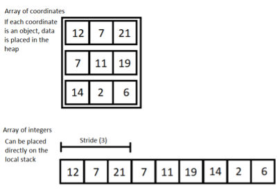

Andmepõhine disain (data-oriented design) on programmeerimisparadigma, mis keskendub andmete tõhusale töötlemisele, kõrgele jõudlusele ning keerukuse ja kõrvalmõjude minimeerimisele.
Unreal Engine
Unreal Engine on üks populaarsemaid mängu- ja simulatsioonimootoreid, mis toetab andmepõhise disaini (DOD) arendusstiili. Unreal Engine'i puhul on DOD kasutusel eelkõige mängu toimimisvõimekuse optimeerimiseks, tagamaks, et suurte andmehulkade töötlemine on võimalikult kiire ja ressursitõhus. Kuna Unreal Engine on väga mälutundlik ja keskendub väga täpsetele andmete töötlemise mustritele, on see ideaalne tööriist DOD-põhise arenduse jaoks.
Näide:
Unreal Engine’is kasutatakse andmepõhise disaini põhimõtteid tihti, et optimeerida näiteks füüsikamootoreid ja AI käitumist. Andmed, nagu tegelaste positsioonid, liikumise kiirus ja kohandatud AI otsustuspuud, on järjestatud andmebaasidesse, et neid saaks kiiresti töödelda, vähendades samas protsessori koormust.
| Head | Vead |
|---|---|
| Hea protsessori vahemälu kasutus – andmed on järjestatud mällu | Keerulisem õppida, eriti OOP-taustaga arendajatele |
| Kiirem töötlus ja parem jõudlus suurte andmehulkadega | Vähem intuitiivne ja raskemini loetav kood |
| Sobib hästi paralleeltöötluseks ja mitme niidiga töötlemiseks | Raskem hallata suurtel ja keerukatel süsteemidel |
| Väiksem mälukasutus – väldib objektipõhist ülekoormust | Vähem tööriistade tuge (nt silurid, IDE-d on pigem OOP-le suunatud) |
| Soodustab süsteemikeskset mõtlemist ja paremat skaleeritavust | Vähem paindlik, kui fookus on käitumisel, mitte jõudlusel |